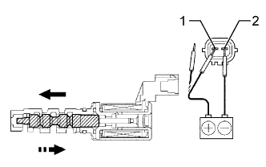

ГИДРАВЛИЧЕСКИЙ КЛАПАН ИЗМЕНЕНИЯ ФАЗ > ПРОВЕРКА |
| 1. ПРОВЕРЬТЕ ГИДРАВЛИЧЕСКИЙ КЛАПАН ИЗМЕНЕНИЯ ФАЗ В СБОРЕ |
Измерьте сопротивление в соответствии со значениями, приведенными в таблице ниже.
| Контакты для подключения диагностического прибора | Состояние | Заданные условия |
| 1 - 2 | 20°C (68°F) | 6,9-7,9 Ом |
|  |
Соедините положительный (+) вывод аккумуляторной батареи с контактом 1, а отрицательный (-) вывод - с контактом 2 и проверьте действие клапана.
| Контакты для подключения диагностического прибора | Состояние | Заданные условия |
| 1 - 2 | Положительное (+) напряжение аккумуляторной батареи подано: | Клапан движется влево, как показано на рисунке стрелкой |
| Прекращение подачи положительного (+) напряжения аккумуляторной батареи | Клапан движется вправо, как показано на рисунке стрелкой |